Updates
Saturday, February, 2020

Artist Showcase: Rachel Schollaert
Saturday, February 15, 2020
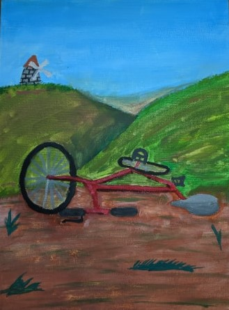That's the cover painting for my new story. It's by the incredibly talented Rachel Schollaert, who does everything from comedy to writing to painting. Not only has she edited everything I've written, but she is my biggest fan, as I am hers. Go check out her severely underestimated Twitter: Twitter.com/notrachels, her facebook for shenanigans and pictures of dogs: Facebook.com/rachelschollaertdoescomedy, or read her blog: Presentdaypilgrim.com/.
Some of my worst ideas:
Saturday, February, 2020
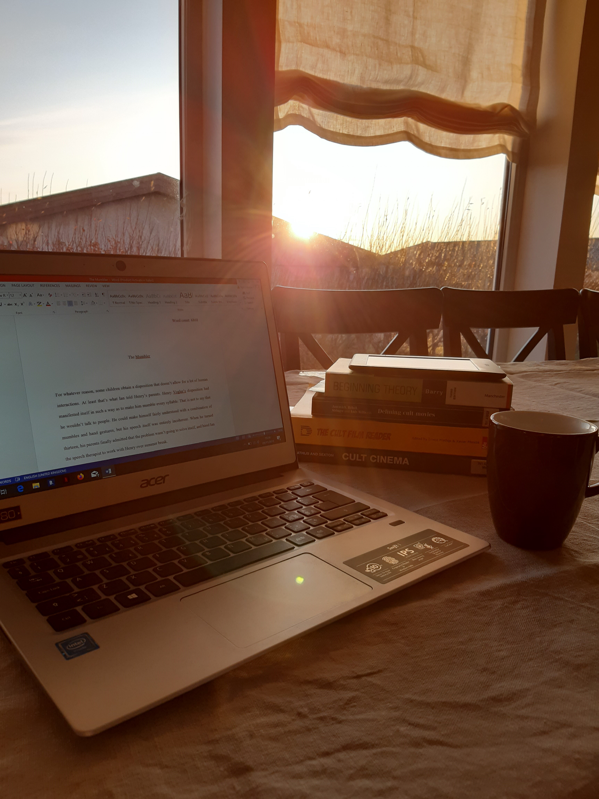Just like there are stupid questions, there are stupid ideas. And while I’m sure there are plenty of stupid ideas that have already made their way into my stories, here are a couple that I’ve discarded:
The little vegetarian who could:
This one is just as insidious as it sounds. Essentially I was trying to pull the rug out from under vegetarianism, not because there is anything wrong with being a vegetarian, but because I was tired of being lectured about it. So I read Peter Singer’s book, Animal Liberation, and mind you I’m still not convinced of there being a moral aspect to vegetarianism. Singer makes a strictly utilitarian case for vegetarianism and I’m not sold. Still, I shouldn't have written this stupid story.
It’s about the only vegetarian in town, who gets the town together in the courthouse to argue about whether they should continue to eat animals. I brought in the historical views of eating animals, the Christian and Kant’s view, leading up to Singer who won the argument, and the town decided to stop eating meat. In the end I had this gruesome scene of a farmer slaughtering all his animals, who had his own point, that the animals we’re breeding in farms aren’t really animals at all. They’re food. They couldn’t live on their own and the only reason they’re here in the first place is so that we can eat them. So at the end of the story there are no farm animals and that made the protagonist sad because her primary motivation had been to be nice. I guess I was mostly going for shock value and it isn’t really a good story. Also it borders on propaganda. I already had a pretty fixed point of view when I started writing it and even though I read as much as I could tolerate on the subject that didn’t change. Doesn’t make for good literature that.
The purposefully not passing the Bechdel test story:
I’m realizing that some of my ideas are just me being a meany. I had the idea to write a story that just barely doesn’t pass the Bechdel test. If you don’t know the test it’s to find out if a story is “representative” of women. If the story has two women speaking to one another about something other than a man it passes the test. So my story would be about two women, but they only talk about a man the whole time. Maybe they’d be at a restaurant talking about some guy they met the night before and then a male waiter would come and they’d start talking to him about quantum physics or something, just not to each other, so it wouldn’t pass the test. I know it’s stupid and impractical and mean. And I know the Bechdel test is just an approximation of whether a story is chauvinistic, and I don’t really have anything against it. Just thought it might be funny.
Think Piece: Writing Advice, be Prolific
Saturday, February 08, 2020
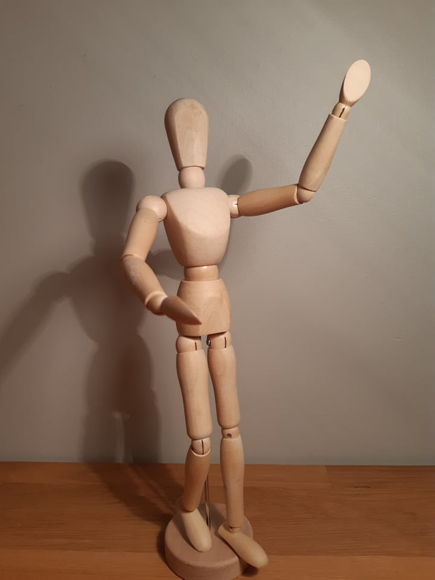Here’s the funny thing about being a prolific writer: It's crazy easy, not because it’s easy in itself, but because the competition is shit. Writing is something people give up on all the time. And you don't have to put in to many hours to catch up. Some of the most prolific writers write for something like four hours every day, and that’s difficult, but it isn’t a fourteen hour work day. On a good day I write for two hours. But if you’re writing for an hour every day you’re probably in the 95th percentile of the most prolific writers on the planet. I don’t really know what it is because conscientiousness and openness to experience (the psychological metrics for hard work and creativity respectively,) are separate things. But people like to engage in a lot of mental gymnastics for why they shouldn’t treat writing like it was any other avocation. “I have to be in the mood,” “the writing has to be perfect,” “I need more life experience before I start writing.” That’s all a lot of junk.
Writing is simple. It doesn't depend on dramatic spurts of inspiration, or fully fleshed out ideas. You simply wake up in the morning, do your morning routine and write. I know. It’s hard. You’re going to have weeks where you can’t do it at all. I had one of those weeks this week. And I know. Who am I to give you advice? Aren’t I just some unpublished, unemployed loser twat pretending to be a writer instead of getting a real job? First of all, wow. Relax. Second of all, it’s not really my advice. I’ve gotten this advice from Stephen King, Steven Pressfield, and Austin Kleon, among others. It’s good advice. It’s perfectly in line with good mental health too because it gets you out of your mind and acting in the real world, which is like the first principle of CBT. And how could writing a lot not be the answer to writing good fiction and getting ahead of other writers? It’s the answer to everything else. So write a lot, or play the cello a lot, or ski a lot, and if you're editing, then edit a lot.
Movie and TV Analysis: The Golden Girls
Saturday, February 01, 2020
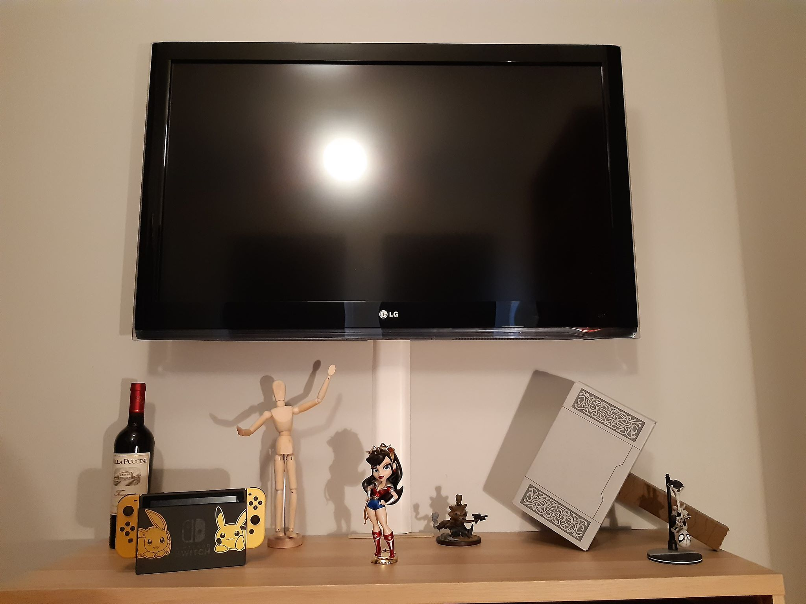Have you ever started doing something ironically and then before you know it you’re on the second season of The Golden Girls? For me it started out as a bit when a buddy of mine and I were expecting someone to come over. We would play an episode of The Golden Girls so our guest would be all like: yo, what am I walking into here? And that’s funny because we’re not exactly the target demographic for the show. We must have watched those magnificent ladies for the better part of the summer.
The Golden Girls is about four elderly women living together, every one of them a widow or divorcee. Blanche, the promiscuous; Rose, the stupid one; Dorothy, the reasonable; and Sophia, who has lost her ability to regulate her speech after a stroke. They all live together because of reasons. Blanche owns the house and their living situation is nearly compromised in the first episode when she almost marries a bigamist. In fact, a number of the episodes are centered around the ladies’ love lives. But, besides the women living together I don’t exactly know what the plot is, although I guess it’s that way with most sitcoms.
So, why do I like the show? Why should you watch it? What does it all mean? Let us examine one of the episodes to find out. Besides, with my Bachelor in English, it may be the only thing I am qualified to do. In episode 4, season 1, Blanche is faced with a dilemma. Her sister Virginia needs a kidney transplant and Blanche is a possible donor. Blanche resents her sister for having continually stolen things from her and the episode forces her to reconcile with Virginia. Now, because we’re watching a sitcom, and if you have sitcom characters change too much you don’t have a sitcom anymore, in the end Blanche displaces her resentment on her other sister. Also she doesn’t even have to actually give up her kidney: they find another donor. In doing so the show seems to set up a moral principle that if you’re willing to do good then good things come of it. Which isn’t necessarily true, but it’s a damn good principle.
The B story in this episode is interesting in that it was picked for this particular episode. The other three ladies are taking care of a baby with colic and coddling it a little. The baby can’t sleep because they keep visiting it in the middle of the night. This could mean a couple of things. Blanche could be the baby. They’re equated in that they both can’t sleep at night and when Blanche finally decides to give Virginia her kidney the baby leaves. In that case it’s a perfect analogy because Blanche needs to be put in a situation where she isn’t being coddled and face whatever is making her a cry baby i.e. her relationship with her sister.
Otherwise, because Blanche doesn’t want the baby around, it represents her relationship with her sister. She doesn’t want the baby to make a mess or to stick around. Which, yeah, you don’t want your relationships to make a mess. And man there are some relationships that make such an awful mess you wish you had never met the person. But if you aren't willing to face the mess then you don’t get to have a relationship. And Blanche’s relationship with Virginia is like taking care of a baby in that both are costly. A baby needs a lot of time and energy and Virginia needs a kidney.
I often say that what I look for in a work of art is something I couldn’t have thought of myself. And The Golden Girls, with its particular blend of insight and circumstances quite unlike my own is exactly that.
Thank you for being a friend.
Working Title: 17ish Again
Saturday, January 25, 2020
Just finished another short story that I can’t post here if I want to send it to publishers, but I can give you a quick synopsis and a snippet. The story is about twenty something years old Jacob who travels to the past, retaining his adult mind. But he’s about to find out that being in high school isn’t as easy as he thought:
I stood up and got my phone out of my pocket. My Nokia phone. I had a Nokia phone in my hand. Why did I have a Nokia in my hand?
Alright, I stumbled home, to get my actual phone. Stroked my head as I walked in the house. Did I shave my head last night? Just had to splash my face with some water. I kind of fell on the bathroom door. But I got to the sink and saw myself in the mirror. I had this baby face with zits. And the buzz cut I had in high school. Had to sit down, so I sat on the edge of the bathtub and let myself slowly sink down.
Was there a reason I was thrown back into my past self? Was this my one shot at changing the past, or a ridiculously vivid lucid dream, and I blew it playing video games all day?
Reasearch: Getting to Know Brony Culture
Sunday, January 19, 2020
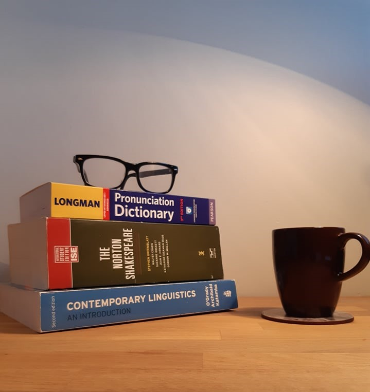My second short story, Emptiness in Harmony, is about a college professor who becomes infatuated with the children’s show My Little Pony. That idea didn’t just appear to me; there is a whole subculture of men that watch the show. They’re called Bronies. And the fun thing about writing is that sometimes you find yourself researching something like Bronies. If you want to learn more about Brony culture there is a wonderful documentary about it called Bronies: The Extremely Unexpected Adult Fans of My Little Pony. Now, while I can’t say I fully understand the appeal of the show, I do have a much more comprehensive view of Brony culture.
For one the show is well made. I watched a few of them for context. Sorry about that if you wanted to write Bronies off as a bunch of loonies watching some nonsense just to be anti-establishment or whatever. The writing is good, the characters are rounded, and the voice acting is professional. But that doesn’t really explain why one would watch a kids’ show does it? We watch shows and read books either to learn something or be entertained, and if you feel you’re being condescended to you aren’t doing either of those. Maybe the writers just went too high-brow with their Pony show. The community aspect may have had something to do with the show’s success at a later point, but there had to be a few Bronies before they could even hold a convention. So there must be something appealing about the show itself, particularly to men in their twenties. If you want to go super political on the subject (which I don’t usually like to do) then the show either embodies all of those things that men have been denied in the patriarchy and they can now allow themselves to feel as we enter more progressive times. Or else the “whatever wave of feminism we’re on right now” has sucked the masculinity out of our culture to such an extent that men aren’t men anymore and have decided to be infantilised. I don’t know about any of that stuff. Usually I like to give a story the benefit of the doubt and think that if people like a story then there is something to it.
The main theme of the show is friendship. It’s a pretty universal theme, applicable to all times. And before you go “Well, that explains it. We’re lonelier now because of smartphones and that’s why these guys are clinging to the show for comfort,” I would like to rebut that that is nonsense. Steven Pinker found that people have adapted perfectly well to our changing social circumstances and even that the people who use social media the most report having more close friends and the women among them being less stressed (Enlightenment Now, chapter 18.) Ha ha I used a real academic reference in a blog post. Suck on that literally every other blogger. But those statistics make sense; it’s probably that extroverted people are using social media more. But that doesn’t mean there is no such thing as loneliness. Maybe that’s what the show caters to. They did a study on the audience and found that the majority considered themselves to be introverted, which isn’t the equivalent of being socially awkward or lonely, but it’s in that ballpark. It’s probably that a bunch of people that aren’t supposed to like a girly cartoon got together and made each other feel less shitty and alone about it.
Come to think of it I like plenty of weird shit. I like cult movies and nerdy web-comics and Armand van Helden. I only feel a slight inclination to apologize for any of those things, so maybe Bronies shouldn’t feel any worse about their thing. What I have felt is less than inclined to share my more offbeat interests, as I’m sure most of us have felt. And I wrote my story from that point of view. I don’t know what it’s like to be a Brony, but I do know what it is like to enjoy something offbeat. And I appreciate it when people enjoy their weird thing without being ashamed or getting all up in your face about it.
Austin Kleon: Keep Going
Saturday, January 11, 2020
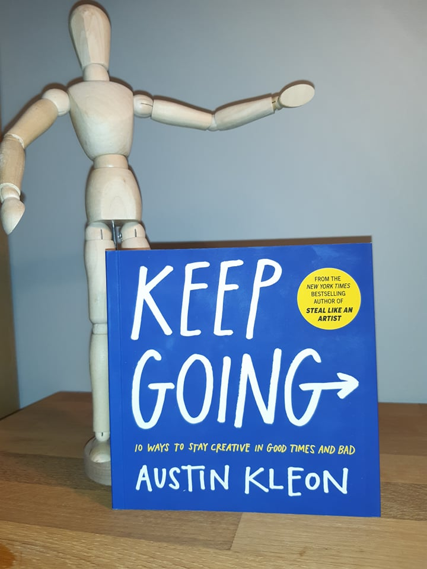Got me another Austin Kleon book for christmas. It's all about how to stick to your artistic pursuits. Kleon talks about how best to organize your writing and with what mindset. It includes the best advice I've ever gotten about writing, and the one you'll find everywhere: make a routine and make sure writing is part of it. Personally I like to write for two hours every morning and then not think about it too much for the rest of the day.
Austin Kleon: Keep GoingSong lyrics I don't know what to do with
Saturday, January 04, 2020
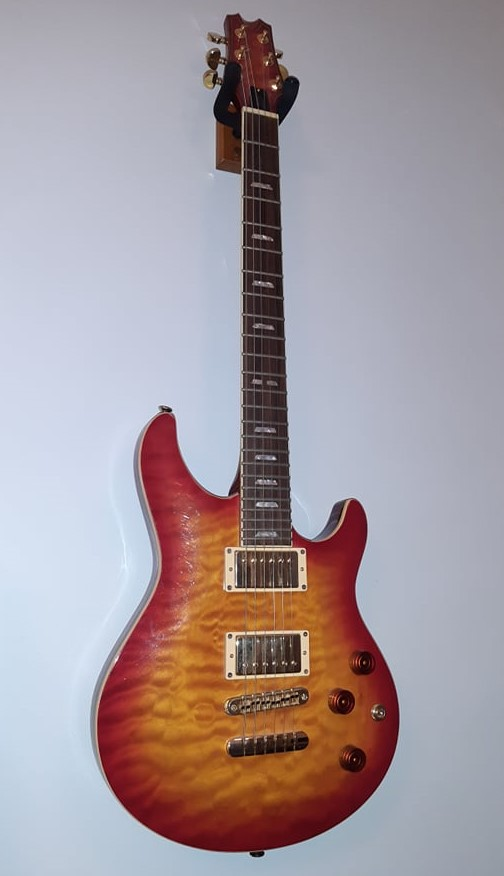I like using song lyrics in my writing. Sometimes as a title (Emptiness in Harmony is from a Simon and Garfunkel song and my BA is named after a line from Pink Floyd's In the Flesh.) At other times I like to put them into the story itself. Particularly I like little snippets that can stand on their own, but I have a hard time putting those to use. Because of this I usually have a few lines at the ready and I figured I'd share with you some that I haven't found any use for yet:
I got a headache like a mother twice the price of my thrills – Guns ‘n’ Roses, Bad Apples
Twenty years of schooling and they put you on the dayshift – Bob Dylan, Subteranean Homesick Blues
My love for you's so overpowering I'm afraid that I will disappear – Paul Simon, Slip Slidin‘ Away
Money doesn‘t talk, it swears – Bob Dylan, It's Alright, Ma (I'm Only Bleeding)
Freedom's just another word for nothin' left to lose – Janis joplin, Me and Bobby McGee
Jordan Peterson: 12 Rules for Life
Monday, December 23, 2019

The final book on my christmas reading list is a self-help book. I know, self-help books are stupid. But you should read this one because incidentally this self-help book is one of the most controversial books of the decade. I have mixed feelings about it. For one, it forces you to be responsible for yourself and at times characterizes some stupid thing you've said so clearly that you can hardly stand it. Also, it was the final nail in the coffin of my academic clarity. I was having a fine go of it, regurgitating marxist theory and then I had to throw that all away because of this book and others. On the other hand it helped me some put other theories in perspective, such as Existentialism and Jungianism. Theories I had felt were true, but that I had trouble reconciling with other ideas.
Jordan Peterson: 12 Rules for LifeNagata Kabi: My Lesbian Experience With Loneliness and sequels
Sunday, December 22, 2019
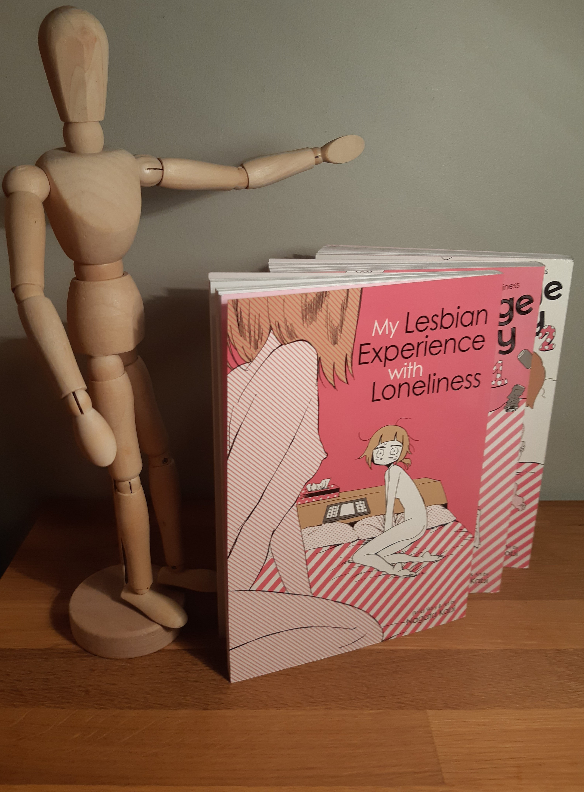I know what you're thinking: that's porn. It's not porn. This is one of those times where you actually can't judge the book by the cover, because this series is a shockingly honest personal account of depression and eating disorders. I do think one of the wonderful things about art is that something written on the other side of the planet by someone quite unlike oneself can resonate as much as this series does.
Nagata Kabi: My Lesbian Experience With LonelinessGreg Sestero and Tom Bissell: The Disaster Artist
Saturday, December 21, 2019
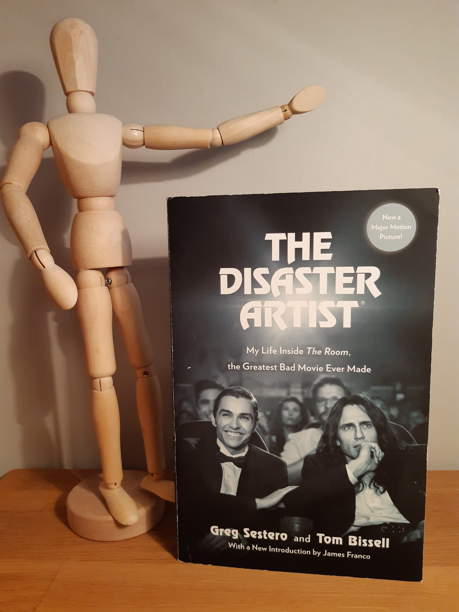If you still haven't seen The Room (2003) then I suggest you do so. And when you're done you will have some questions. Why was this made? Are they serious? Who payed for this fiasco? This book answers some of those questions. It details Greg Sestero's involvement with the movie and his getting to know Tommy Wiseau, the director, lead actor and writer of The Room. That there is my signed copy of the book from when Greg Sestero came to a screening at Bíó Paradís.
Greg Sestero and Tom Bissell: The Disaster ArtistGreg Lukianoff and Jonathan Haidt: The Coddling of the American Mind
Friday, December 20, 2019

I read two books by Jonathan Haidt this year. This book and The Righteous Mind. You should read this one because it more or less directly contradicts Steven Pinker's book that I recommended to you yesterday. Whereas Pinker found no rise in depression, Greg and Haidt did and use it as one of their six explanations for the rise in what they term "safetyism," the notion that one should avoid unsafe endavours, always trust one's feelings, and divide the world into good and bad people. They explore how these "untruths" have led to rising tensions on college campuses and how that in turn sustains poor mental health and cognitive distortions such as the untruths.
Greg Lukianoff and Jonathan Haidt: The Coddling of the American MindSteven Pinker: Enlightement Now
Thursday, December 19, 2019

If you're still looking for some christmas reading then here is a countdown of the top five books I read this year, in no particular order. First up: Steven Pinker's Enlightenment Now. If you have, like the rest of us, been feeling a little stressed out about the state of the world then read this book. In it Pinker gathers contemporary positive statistics about, among others, health, wealth, the environment, and depression. It turns out we're doing a lot better than we thought. The book includes wonderful findings, such as that the poor countries of the world are becoming richer at a faster pace than at any other point in history, that economic growth and environmental progress can go hand in hand, and that suicide rates are not at an unprecidented all time high.
Steven Pinker: Enlightenment NowBack to school
Saturday, December 14, 2019
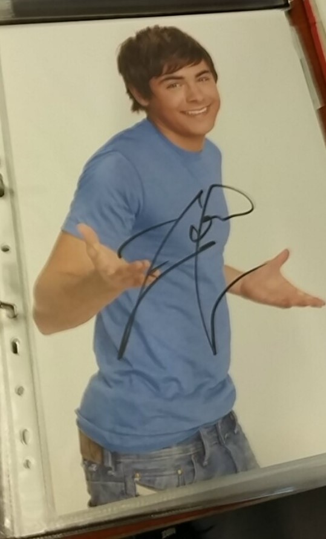Here's a sentence I never thought I'd say: I regret not buying that poster signed by Zac Efron. I took that picture at comic con in Berlin where someone had a booth with all these posters and albums and stuff signed by celebrities. Now I don't know if they're all fake or what, but I should have bought the Zac Efron poster anyway. Because in 2009 he starred in a movie called 17 again and right now I'm writing a story using essentially the same trope as 17 again, of someone inhabiting his old self. Working title: 17ish again. And since it's set in the past and similar to 17 again, I decided it would be a good idea to watch old Zac Efron movies; for research. So, here I am, a twenty four year old man, with a task on my calendar titled: Watch High School Musical. And I don't even have the goddamn poster to show for it.
Generic Update
Saturday, December 07, 2019
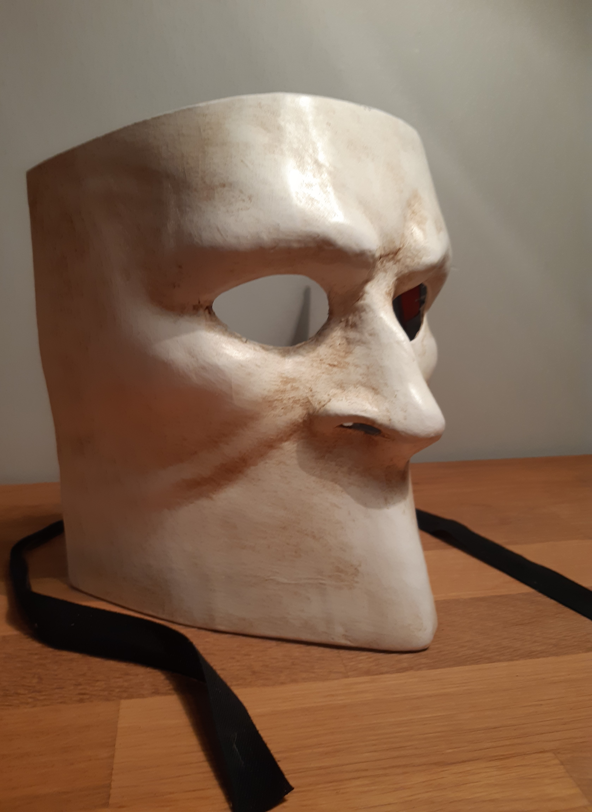This is my Bauta. Apparently Venetian masks have different names based on the design and this is a Bauta. I bought him last year for halloween, but he makes for a better room decoration than a costume because he is uncomfortable to wear for a long time. In the same vein I figured he might be a good background picture for some kind of posts right here. Maybe just generic update posts.
I spent this last week finalizing my BA essay and after I've handed that in I'm going to spend the rest of December editing an old story. As far as I can tell, Emptiness in Harmony has only been rejected three times this semester. I'm gonna try to pump those numbers up and get rejected way harder in 2020. Mostly I've been sending my stories to short story contests because if you win one of those you get money. But it takes a long time for them to read all the submissions and that really narrows my chances of being rejected. Now, since I feel I have to be rejected by at least a certain number of publications before I give up and post the stories here on my website, and I do want people to be able to read my stories, I've started applying for rejection by non paying publications. Wish me luck.
NaNoWriMo Highlights #4
Saturday, November 30, 2019
Last week of NaNoWriMo. Once again NaNoWriMo is a challenge to write 50.000 words. They have their own website (nanowrimo.org) where they help people reach their writing goals and if you're less ambitious you simply go for a lesser goal. This week I got down 2300 words for a grand total of 4500. That's nowhere near 50.000. Nor is it anywhere close to what my lesser goal, which was to write 25.000 words. So it might seem weird to write about it on the internet. But I'm happy just to be writing at all.
NaNoWriMo Highlight:
Jonathan took a garbage bag in one hand and noticed a familiar smell when he grabbed his jacket, which only grew stronger after he had thrown out the trash and reached into his coat pocket for a cigarette. It was a woman’s perfume, enveloping the jacket lining. It didn’t mix well with the Winston reds. Jonathan had always enjoyed the smell of a cigarette and in a subtle way he resented those who could quit smoking because they found they didn’t really enjoy anything but the nicotine. He enjoyed the harshness of a cigarette. That you could do something not to feel good exactly, but satisfy some other human impulse.
He had worried about the smell until now; didn’t want Ellen to complain about being married to an ashtray. But if it was either perfumed houseboy or an ashtray, he’d be an ashtray. He blew a hefty mouthful of smoke into his inner coat pocket, stamped out the cigarette and walked inside. As he came up the stairs, he noticed Karen out of the corner of his eye. She sat in the armchair swirling a cocktail.
NaNoWriMo Highlights #3
Saturday, November 23, 2019
I only wrote a couple of pages for Nanowomo this week and to be honest I don't think I'm going to use most of it. I got sick and besides that I've been feeling a little off, but that's all part of the writing process I guess. lol. God, I feel so pretentious saying "the writing process" Even if it isn't my best work I wanted to show you some of it so you can get a sense of where I'm at.
Nanowomo Highlight:
All work and no play makes Jack a dull boy. All Work and no play makes jack a dull boy. all work and on play makes Jack a dull boy.All work and no play makes Jack a dull boy. All work and no Play makes jack a dull oy all work and no plaY makes Jack a dull boy. All work and no play maes Jack aull boy.ll work and no play makes Jack a dull boy. Al work and no play makes Jack a dull boy. All Work and no play makes jack a dull boy. all work and on play makes Jack a dull boy.All work and no play makes Jack a dul boy. A.ll work and no play makes jack a dull boy all wor and no play makes Jack a dull boy. All work and no play makes Jack a dull boy.ll work and no play makes Jack a dull boy. All work and no play makes Jack a dull boy. All Work and no play makes jack a dull boy. all work and on play makes Jack a dull boy.All work and no play makes Jack a dull boy.
All Work and no play makes jack a dull boyall work and no play makes Jack a dull boy All work and no play makes Jack a dull boy.
People = Shit?
Wednesday, November 20, 2019
I've been trying to find some music to drown out the world while I'm writing, so I went and found a band I used to listen to back when I was an angsty teen: Slipknot. If you don't know them they're that lovely band with the timeless hits like: People = Shit, Everything Ends, and All Hope is Gone. It's actually been great for getting in the right headspace, but I really hope it doesn't seep into my writing :) smiley face.
NaNoWriMo Highlights #2
Saturday, November 16, 2019
The second week of NaNoWromo was a little more productive. I wrote 1500 words, which is still far from the target goal, but I'm still 1500 words richer, and I've managed to recycle a couple of ideas that didn't seem to belong elsewhere. The whole point of NaNoWrOmo is freewriting, which I'm still pretty bad at. I want to go back and edit everything right away. Here's silly old idea of mine that I went back and edited a little for you.
NaNoWroMo highlight:
Mr Pagill, who had hardly looked up from his drink, made half an attempt to the refreshments, but seeing Old lady nr.1’s hand reaching for the same spot, he retreated. Old lady nr.1 assembled an appetiser: rye bread, cured salmon, dill sauce. Mr. Pagill watched her manoeuvre the table and how despite the various hors d’oeuvres and accompanying sauces, her shawl stayed clear of it all. He imagined the shawl had a will of its own, dancing effortlessly, condescendingly, around the smorgasbord. Almost as if resentful of the hedonistic cold cuts, vile sauces.
NaNoWriMo Highlights #1
Saturday, November 09, 2019
National Novel Writing Month (NaNoWriMo for short) is an online challenge to write 50.000 words, i.e. a whole novel, during the month of November. I'm not that ambitious and set myself the goal of writing 25.000 words. This means I have to write 5000 words every week, or 1000 words every weekday. So far I have written just short of 700 words, which, you may notice, is nowhere near any of those other numbers.
NaNoWroMo highlight:
Upstairs in the den was a leather armchair, a few kitchen chairs, and a small liquor closet. Sitting in two of the kitchen chairs were two old ladies whose names I haven’t picked yet. Their intent had been to see the whole house, but after the ordeal of the stairs they were obliged to sit down. Since there were two of them neither thought it was fair for her to sit in the armchair. From there they could see into Jonathan’s office and downstairs through the banister.
“He sure does read a lot.”
“I don’t really know my purpose in this story, but isn’t this a nice way to set the scene?”
"Is this going to be in the final edit?"
"Almost definitely not"
Show Your Work!
Friday, November 08, 2019
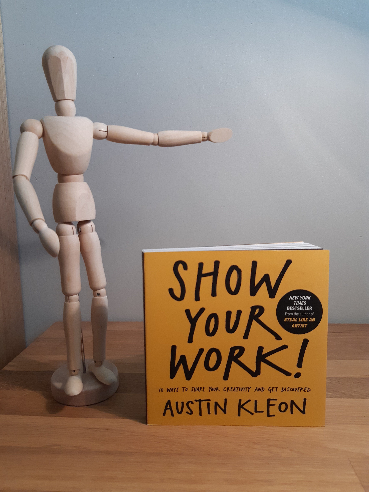This is the book that really made me want to make this website. It's a wonderful book for upcoming artists about, well, sharing your work. Particularly sharing your process, and the things that inspire you. In the spirit of that: here is something that inspired me. #NotSponsored
Austin Kleon: Show Your Work!First Update
Wednesday, November 06, 2019
This is the first update, declaring that I made a website. Hurray!